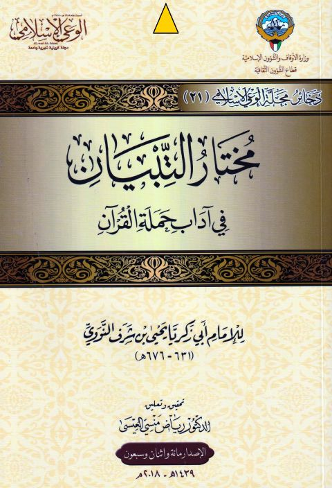

Downloads need an internet connection.
مختار التبيان في آداب حملة القرآن
Authors: يحيى بن شرف النووي
Editors: رياض منسي العيسى
Publishers: الوعي الإسلامي
**▫️ العنوان: مختار التبيان في آداب حملة القرآن** ▪️ المؤلف: #يحيى_بن_شرف_النووي ▫️ المحقق: #رياض_منسي_العيسى ▪️ الناشر: #الوعي_الإسلامي ▫️ تاريخ النشر: 2018م 1439هـ ▪️ بلد النشر: الكويت، #الكويت ▫️ الطبعة: 1 ▪️ عدد الأجزاء: 1 ▫️ الصفحات: 113 ▪️ نوع الوعاء: #كتاب ▫️ التصنيف الرئيسي: #التفسير_وعلوم_القرآن ▪️ التصنيف الفرعي: #مباحث_قرآنية_عامة ۪